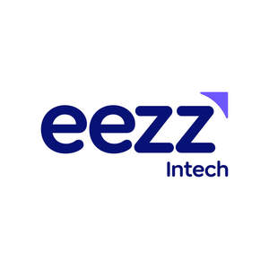

Trade Mark Journal No.2025/011 14 March 2025
UK00004167404 1 March 2025 (42)

- Class 42
- Information technology consulting; Information technology consulting services; Information technology consultancy; Information technology [IT] consulting services; Consultancy and information services in the field of information technology; Consultancy and information services relating to information technology; Computer and information technology consultancy services; Technical advice and consultancy services in the field of information technology; Consultancy services relating to information technology; Information technology services; Consultancy and information services in the field of information technology architecture and infrastructure; Information technology [IT] consultancy; Technical consultancy services relating to information technology; Consultancy and information services relating to information technology architecture and infrastructure; Engineering services relating to information technology; Information services relating to information technology; Providing information in the field of information technology; Providing science technology information; Information technology support services; Providing information, advice and consultancy services in the field of computer software integration and troubleshooting; Research in the field of information technology; Control technology consulting services; Consultancy and information services relating to computer system integration; Issuing of information relating to information technology; Consultancy services for analysing information systems; Providing online information about industrial analysis and research services; Compilation of information relating to information technology; Computer technology consultancy; Advisory services relating to computer-based information systems; Information services relating to the development of computer systems; Research in the field of communications technology; Technical advice and consultancy services in the field of telecommunications technology; Providing information relating to computer technology and programming via a website; Professional consultancy relating to technological research; IT consultancy, advisory and information services; Telecommunications technology consultancy; Compilation of information relating to information technology; Consultancy services relating to data analytics, artificial intelligence (AI), and machine learning (ML); Consulting services relating to cybersecurity, including security audits, vulnerability assessment, penetration testing, threat monitoring, and compliance management; Consultancy relating to cloud migration, multi-cloud, hybrid cloud strategy, and cloud optimization services; Consultancy and information services relating to information technology architecture and cloud infrastructure; Managed IT services including IT helpdesk, remote IT support, network management, server administration, IT asset management, disaster recovery planning, IT compliance and audit consulting; Professional advisory services relating to financial technology systems; Providing information relating to computer technology and programming via online platforms; Science and technology information services related to IT and digital transformation.
Eezz Intech Limited